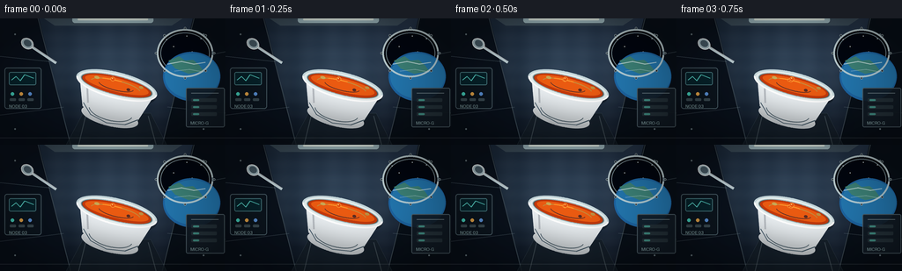
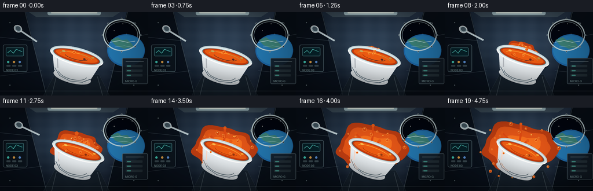
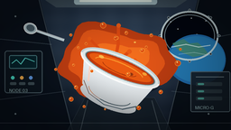

CODING AGENTS AS PIXEL WORLD MODELS
traex/GPT-5.6-Sol · mechanics_0000
点击播放 · 原生 RGB 像素
逐轮保存的候选
回放视频、检查图与代码变化。
每份候选均可单独播放。实际图片检查记录在下方工具轨迹中。
候选 01播放与检查图
点击播放 · 原生 RGB 像素


展开代码变化
--- 上一保存版本
+++ 本次保存版本
@@ -0,0 +1,254 @@
+from pathlib import Path
+import json, math, random
+import numpy as np
+from PIL import Image, ImageDraw, ImageFont, ImageFilter
+import artifact_io
+
+CASE_DIR = Path(__file__).resolve().parent
+SPEC = json.loads((CASE_DIR/'task_spec.json').read_text())
+W,H,N,FPS = SPEC['width'],SPEC['height'],SPEC['frames'],SPEC['fps']
+S=4
+random.seed(17)
+
+# supersampled drawing helpers
+def sc(v): return int(round(v*S))
+def box(b): return tuple(sc(x) for x in b)
+def pts(p): return [(sc(x),sc(y)) for x,y in p]
+def ellipse(d,b,fill,outline=None,width=1): d.ellipse(box(b),fill=fill,outline=outline,width=sc(width) if outline else 1)
+def line(d,p,fill,width=1,joint='curve'): d.line(pts(p),fill=fill,width=sc(width),joint=joint)
+def polygon(d,p,fill,outline=None): d.polygon(pts(p),fill=fill,outline=outline)
+def rounded(d,b,r,fill,outline=None,width=1): d.rounded_rectangle(box(b),radius=sc(r),fill=fill,outline=outline,width=sc(width))
+
+def background(frame):
+ # subtle camera breathing while preserving a stable space-station setting
+ yy,xx=np.mgrid[0:H*S,0:W*S]
+ x=xx/(W*S); y=yy/(H*S)
+ base=np.zeros((H*S,W*S,3),dtype=np.float32)
+ base[:,:,0]=10+20*(1-y)+9*x
+ base[:,:,1]=18+27*(1-y)+10*x
+ base[:,:,2]=28+35*(1-y)+14*x
+ glow=np.exp(-(((x-.51)/.43)**2+((y-.42)/.55)**2)*2.2)
+ base += glow[:,:,None]*np.array([22,28,31])[None,None,:]
+ # brushed metal bands
+ base += (2*np.sin(xx*.055)+1.3*np.sin(yy*.09))[:,:,None]
+ im=Image.fromarray(np.uint8(np.clip(base,0,255)),'RGB')
+ d=ImageDraw.Draw(im,'RGBA')
+ # long perspective wall panels
+ polygon(d,[(0,0),(44,0),(80,144),(0,144)],(8,15,25,230))
+ polygon(d,[(256,0),(219,0),(184,144),(256,144)],(7,14,22,235))
+ line(d,[(43,0),(80,144)],(130,153,163,100),1)
+ line(d,[(220,0),(184,144)],(143,164,174,100),1)
+ line(d,[(0,43),(57,49)],(146,170,180,70),1)
+ line(d,[(256,38),(204,48)],(146,170,180,70),1)
+ line(d,[(0,110),(72,101)],(146,170,180,55),1)
+ line(d,[(256,108),(190,101)],(146,170,180,55),1)
+ # ceiling beams and center light
+ polygon(d,[(50,0),(207,0),(195,8),(62,8)],(83,102,111,150))
+ rounded(d,(82,-2,174,5),3,(205,235,238,185))
+ rounded(d,(88,0,168,2),1,(245,255,245,230))
+ # seams/rivets
+ for bx in [17,231]:
+ for by in [18,67,126]:
+ ellipse(d,(bx-1,by-1,bx+1,by+1),(151,173,180,145))
+ ellipse(d,(bx-.35,by-.35,bx+.35,by+.35),(242,250,246,180))
+ # porthole on upper right, Earth outside
+ ellipse(d,(178,12,242,67),(5,9,18,255),(128,151,163,210),2)
+ ellipse(d,(182,16,238,63),(2,6,16,255),(192,218,222,155),1)
+ # stars
+ stars=[(189,24),(228,23),(218,38),(233,48),(197,32),(212,20)]
+ for sx,sy in stars:
+ ellipse(d,(sx-.45,sy-.45,sx+.45,sy+.45),(240,250,255,220))
+ # earth limb, deliberately partly cut by porthole
+ ellipse(d,(185,38,250,94),(30,103,166,255))
+ ellipse(d,(187,40,249,91),(36,122,180,255))
+ polygon(d,[(191,48),(203,43),(210,48),(219,47),(226,53),(231,60),(214,63),(199,57)],(67,137,115,220))
+ # cloud streaks
+ line(d,[(190,52),(206,49),(220,52),(233,50)],(227,245,244,180),1.2)
+ line(d,[(198,60),(215,58),(231,61)],(230,246,247,130),.8)
+ # redraw porthole rim
+ d.arc(box((178,12,242,67)),5,355,fill=(207,225,226,220),width=sc(2))
+ for a in range(0,360,45):
+ cx,cy=210+33*math.cos(math.radians(a)),39.5+28.5*math.sin(math.radians(a))
+ ellipse(d,(cx-1.3,cy-1.3,cx+1.3,cy+1.3),(42,53,61,255),(183,201,205,220),.5)
+ # left controls
+ rounded(d,(5,56,47,103),3,(12,21,30,230),(91,113,122,190),1)
+ rounded(d,(10,61,41,76),2,(7,35,43,255),(78,129,135,220),1)
+ line(d,[(13,70),(18,66),(23,71),(28,64),(38,68)],(93,222,208,220),1)
+ for i,c in enumerate([(72,218,196,240),(239,171,74,240),(96,154,228,240)]):
+ ellipse(d,(12+i*10,84,16+i*10,88),c)
+ rounded(d,(11+i*10,91,18+i*10,94),1,(92,112,119,150))
+ # right lower equipment packs
+ rounded(d,(211,79,255,124),2,(19,29,39,235),(100,120,128,180),1)
+ line(d,[(217,85),(248,85)],(159,177,181,130),1)
+ for j in range(3):
+ rounded(d,(217,91+j*8,246,95+j*8),1,(39,52,60,230))
+ rounded(d,(219,92+j*8,226,94+j*8),1,(81,188,169,180))
+ # floor hatch / depth cues
+ polygon(d,[(75,144),(94,108),(171,108),(189,144)],(20,30,39,190),(106,127,135,120))
+ line(d,[(97,111),(89,144)],(162,180,183,70),1)
+ line(d,[(168,111),(177,144)],(162,180,183,70),1)
+ line(d,[(0,136),(256,136)],(147,164,168,45),1)
+ # tiny panel labels
+ try: font=ImageFont.load_default(size=sc(5))
+ except TypeError: font=ImageFont.load_default()
+ d.text((sc(10),sc(97)),"NODE 03",font=font,fill=(151,184,185,170))
+ d.text((sc(216),sc(116)),"MICRO-G",font=font,fill=(151,184,185,150))
+ # cool ambience and vignette applied later
+ return im
+
+def organic_blob(cx,cy,rx,ry,phase,n=64):
+ p=[]
+ for i in range(n):
+ a=2*math.pi*i/n
+ wob=1 + .10*math.sin(3*a+phase)+.07*math.sin(5*a-phase*.7)+.035*math.sin(9*a+1.2)
+ # different lobes expand at different speeds
+ p.append((cx+rx*wob*math.cos(a),cy+ry*wob*math.sin(a)))
+ return p
+
+# fixed droplet directions, speeds, sizes
+DROPS=[]
+for i in range(22):
+ a=2*math.pi*i/22 + random.uniform(-.16,.16)
+ speed=random.uniform(24,72)
+ size=random.uniform(1.2,4.1)
+ delay=random.uniform(.02,.48)
+ tangent=random.uniform(-8,8)
+ DROPS.append((a,speed,size,delay,tangent,random.random()*6.28))
+
+def draw_liquid(im, frame, source):
+ d=ImageDraw.Draw(im,'RGBA')
+ t=frame/(N-1)
+ # smooth slow release, no sudden jump
+ p=t*t*(3-2*t)
+ cx,cy=source
+ # broad translucent, suspended sheet behind the bowl
+ rx=7+57*p; ry=4+36*p
+ outer=organic_blob(cx,cy,rx,ry,.35+1.0*t)
+ polygon(d,outer,(190,61,17,88))
+ inner=organic_blob(cx-1,cy,rx*.82,ry*.80,1.1+.6*t)
+ polygon(d,inner,(229,86,23,150))
+ core=organic_blob(cx+1,cy+1,rx*.56,ry*.52,2.4+.4*t)
+ polygon(d,core,(246,111,29,178))
+ # rim-source remains opaque and luminous
+ ellipse(d,(cx-12-4*p,cy-5-2*p,cx+13+5*p,cy+5+3*p),(238,96,20,230))
+ # radial fingers make the all-directions expansion unmistakable
+ dirs=[-.03,.64,1.28,2.05,2.72,3.35,4.05,4.78,5.52]
+ for k,a in enumerate(dirs):
+ q=max(0,(t-(.04+.025*(k%3)))/(0.96-.025*(k%3)))
+ q=q*q*(3-2*q)
+ L=(19+12*(k%4))*q + 3
+ bend=3.1*math.sin(t*1.3+k*1.7)
+ x1=cx+math.cos(a)*L*.45-math.sin(a)*bend
+ y1=cy+math.sin(a)*L*.32+math.cos(a)*bend*.5
+ x2=cx+math.cos(a)*L
+ y2=cy+math.sin(a)*L*.68
+ wd=max(1.2,(5.5-2.4*q)*(1+.15*math.sin(k)))
+ line(d,[(cx,cy),(x1,y1),(x2,y2)],(224,75,18,140),wd)
+ ellipse(d,(x2-wd*.7,y2-wd*.7,x2+wd*.7,y2+wd*.7),(235,91,22,176))
+ # free floating beads drift outward on divergent paths
+ for i,(a,speed,size,delay,tan,ph) in enumerate(DROPS):
+ q=max(0,(t-delay)/(1-delay))
+ if q<=0: continue
+ # acceleration is minimal: capillary release then steady inertia
+ dist=(7+speed*q)
+ dx=math.cos(a)*dist - math.sin(a)*tan*q*q
+ dy=math.sin(a)*dist*.72 + math.cos(a)*tan*q*q*.5
+ r=size*(.78+.22*math.sin(ph+q*2.0))
+ x0,y0=cx+dx,cy+dy
+ ellipse(d,(x0-r,y0-r,x0+r,y0+r),(220,74,17,210),(255,151,52,190),.55)
+ ellipse(d,(x0-r*.45,y0-r*.55,x0-r*.03,y0-r*.13),(255,217,128,220))
+ # glints floating on the continuous sheet
+ for a,rr in [(.3,.34),(2.2,.52),(4.0,.40),(5.3,.62)]:
+ x0=cx+math.cos(a)*rx*rr; y0=cy+math.sin(a)*ry*rr
+ ellipse(d,(x0-1.2,y0-.7,x0+1.2,y0+.7),(255,194,81,145))
+
+def bowl_sprite(angle):
+ sw,sh=128,90
+ spr=Image.new('RGBA',(sc(sw),sc(sh)),(0,0,0,0))
+ # soft shadow attached to floating object
+ d=ImageDraw.Draw(spr,'RGBA')
+ ellipse(d,(21,23,111,53),(4,8,12,90))
+ # body gradient clipped to bowl silhouette
+ mask=Image.new('L',spr.size,0); md=ImageDraw.Draw(mask)
+ polygon(md,[(20,33),(109,33),(97,68),(84,77),(48,77),(32,67)],255)
+ ellipse(md,(32,61,98,82),255)
+ arr=np.zeros((sc(sh),sc(sw),4),dtype=np.uint8)
+ for yy in range(sc(sh)):
+ y=yy/S
+ shade=int(np.clip(235-1.1*(y-35)+14*math.exp(-((y-55)/20)**2),150,250))
+ arr[yy,:,0]=shade; arr[yy,:,1]=min(255,shade+5); arr[yy,:,2]=min(255,shade+8); arr[yy,:,3]=np.asarray(mask)[yy]
+ body=Image.fromarray(arr,'RGBA')
+ spr.alpha_composite(body)
+ d=ImageDraw.Draw(spr,'RGBA')
+ # blue-gray ceramic shadow and body contour
+ line(d,[(32,63),(43,74),(63,79),(84,76),(97,67)],(101,126,139,150),1)
+ line(d,[(31,42),(37,62)],(255,255,255,170),2)
+ # outer lip
+ ellipse(d,(17,20,111,50),(229,239,239,255),(255,255,255,255),2)
+ ellipse(d,(22,24,106,46),(76,91,91,255),(157,177,180,255),1)
+ # soup surface inside the bowl
+ ellipse(d,(24,25,104,45),(196,58,12,255))
+ ellipse(d,(27,27,101,42),(235,91,18,255))
+ # swirling soup shading
+ d.arc(box((34,29,92,43)),184,348,fill=(255,162,50,190),width=sc(1.2))
+ d.arc(box((43,30,84,41)),5,170,fill=(155,47,11,150),width=sc(1))
+ ellipse(d,(37,30,43,33),(255,205,89,190))
+ ellipse(d,(76,35,80,38),(117,38,14,170))
+ ellipse(d,(89,29,94,32),(255,181,62,180))
+ # bright front rim sits over liquid
+ d.arc(box((17,20,111,50)),5,176,fill=(255,255,255,255),width=sc(2))
+ d.arc(box((17,20,111,50)),178,358,fill=(197,215,219,255),width=sc(2))
+ # small embossed stripe
+ d.arc(box((39,54,90,76)),8,170,fill=(166,189,196,110),width=sc(1))
+ return spr.rotate(angle,resample=Image.Resampling.BICUBIC,expand=True)
+
+def draw_spoon(im, frame):
+ # free-floating spoon, slow inertial tumble
+ t=frame/(N-1)
+ ang=-34+15*t
+ sp=Image.new('RGBA',(sc(60),sc(22)),(0,0,0,0)); d=ImageDraw.Draw(sp,'RGBA')
+ line(d,[(12,11),(49,11)],(195,213,218,255),3)
+ line(d,[(14,10),(48,10)],(255,255,255,160),.7)
+ ellipse(d,(2,5,17,17),(173,195,202,255),(246,253,253,240),1)
+ ellipse(d,(5,7,14,14),(99,125,136,180))
+ sp=sp.rotate(ang,resample=Image.Resampling.BICUBIC,expand=True)
+ x=sc(48+5*t)-sp.width//2; y=sc(40-2*t)-sp.height//2
+ im.alpha_composite(sp,(x,y))
+
+def vignette_and_downsample(im):
+ a=np.asarray(im.convert('RGB')).astype(np.float32)
+ yy,xx=np.mgrid[0:H*S,0:W*S]
+ nx=(xx-W*S/2)/(W*S/2); ny=(yy-H*S/2)/(H*S/2)
+ vig=np.clip(1-.28*(nx*nx+ny*ny),.64,1)
+ a*=vig[:,:,None]
+ out=Image.fromarray(np.uint8(np.clip(a,0,255))).resize((W,H),Image.Resampling.LANCZOS)
+ return np.asarray(out,dtype=np.uint8)
+
+def render(frame):
+ im=background(frame).convert('RGBA')
+ t=frame/(N-1)
+ # source and bowl drift together very gently
+ driftx=2.1*math.sin(t*math.pi*1.1)
+ drifty=-1.6*t+0.8*math.sin(t*math.pi*2)
+ source=(128+driftx,69+drifty)
+ draw_liquid(im,frame,source)
+ draw_spoon(im,frame)
+ angle=-14-8*t+1.0*math.sin(t*math.pi*1.4)
+ bowl=bowl_sprite(angle)
+ bx=sc(130+driftx)-bowl.width//2
+ by=sc(86+drifty)-bowl.height//2
+ im.alpha_composite(bowl,(bx,by))
+ # a few foreground beads cross the bowl edge, emphasizing 3D zero-g suspension
+ d=ImageDraw.Draw(im,'RGBA')
+ p=t*t*(3-2*t)
+ for a,dist,r in [(1.0,27,2.2),(2.55,31,1.7),(5.75,35,2.5)]:
+ x=source[0]+math.cos(a)*dist*p
+ y=source[1]+math.sin(a)*dist*.65*p
+ ellipse(d,(x-r,y-r,x+r,y+r),(229,82,18,230),(255,165,58,220),.5)
+ ellipse(d,(x-r*.4,y-r*.5,x,y-r*.1),(255,218,127,210))
+ return vignette_and_downsample(im)
+
+frames=np.stack([render(i) for i in range(N)],axis=0)
+assert frames.shape==(N,H,W,3) and frames.dtype==np.uint8
+artifact_io.save(frames,CASE_DIR)
+print('saved',frames.shape,frames.dtype)
可观测工具轨迹
实际执行的命令与返回图片。
命令 1exit 0
/bin/bash -lc "cat prompt.txt && printf '\\n---RULES---\\n' && cat GENERATION_RULES.md && printf '\\n---SPEC---\\n' && cat task_spec.json"
命令 2exit 0
/bin/bash -lc "find . -maxdepth 2 -type f -printf '%p %s bytes\\n' | sort"
命令 3exit 0
/bin/bash -lc "which ffmpeg; which python3; python3 - <<'PY'
try:
import cv2; print('cv2',cv2.__version__)
except Exception as e: print('no cv2',e)
try:
from PIL import Image; print('PIL ok')
except Exception as e: print('no PIL',e)
PY"命令 4exit 0
/bin/bash -lc 'cat artifact_io.py'
命令 5exit 0
/bin/bash -lc "cat > generate.py <<'PY'
from pathlib import Path
import json, math, random
import numpy as np
from PIL import Image, ImageDraw, ImageFont, ImageFilter
import artifact_io
CASE_DIR = Path(__file__).resolve().parent
SPEC = json.loads((CASE_DIR/'task_spec.json').read_text())
W,H,N,FPS = SPEC['width'],SPEC['height'],SPEC['frames'],SPEC['fps']
S=4
random.seed(17)
# supersampled drawing helpers
def sc(v): return int(round(v*S))
def box(b): return tuple(sc(x) for x in b)
def pts(p): return [(sc(x),sc(y)) for x,y in p]
def ellipse(d,b,fill,outline=None,width=1): d.ellipse(box(b),fill=fill,outline=outline,width=sc(width) if outline else 1)
def line(d,p,fill,width=1,joint='curve'): d.line(pts(p),fill=fill,width=sc(width),joint=joint)
def polygon(d,p,fill,outline=None): d.polygon(pts(p),fill=fill,outline=outline)
def rounded(d,b,r,fill,outline=None,width=1): d.rounded_rectangle(box(b),radius=sc(r),fill=fill,outline=outline,width=sc(width))
def background(frame):
# subtle camera breathing while preserving a stable space-station setting
yy,xx=np.mgrid[0:H*S,0:W*S]
x=xx/(W*S); y=yy/(H*S)
base=np.zeros((H*S,W*S,3),dtype=np.float32)
base[:,:,0]=10+20*(1-y)+9*x
base[:,:,1]=18+27*(1-y)+10*x
base[:,:,2]=28+35*(1-y)+14*x
glow=np.exp(-(((x-.51)/.43)**2+((y-.42)/.55)**2)*2.2)
base += glow[:,:,None]*np.array([22,28,31])[None,None,:]
# brushed metal bands
base += (2*np.sin(xx*.055)+1.3*np.sin(yy*.09))[:,:,None]
im=Image.fromarray(np.uint8(np.clip(base,0,255)),'RGB')
d=ImageDraw.Draw(im,'RGBA')
# long perspective wall panels
polygon(d,[(0,0),(44,0),(80,144),(0,144)],(8,15,25,230))
polygon(d,[(256,0),(219,0),(184,144),(256,144)],(7,14,22,235))
line(d,[(43,0),(80,144)],(130,153,163,100),1)
line(d,[(220,0),(184,144)],(143,164,174,100),1)
line(d,[(0,43),(57,49)],(146,170,180,70),1)
line(d,[(256,38),(204,48)],(146,170,180,70),1)
line(d,[(0,110),(72,101)],(146,170,180,55),1)
line(d,[(256,108),(190,101)],(146,170,180,55),1)
# ceiling beams and center light
polygon(d,[(50,0),(207,0),(195,8),(62,8)],(83,102,111,150))
rounded(d,(82,-2,174,5),3,(205,235,238,185))
rounded(d,(88,0,168,2),1,(245,255,245,230))
# seams/rivets
for bx in [17,231]:
for by in [18,67,126]:
ellipse(d,(bx-1,by-1,bx+1,by+1),(151,173,180,145))
ellipse(d,(bx-.35,by-.35,bx+.35,by+.35),(242,250,246,180))
# porthole on upper right, Earth outside
ellipse(d,(178,12,242,67),(5,9,18,255),(128,151,163,210),2)
ellipse(d,(182,16,238,63),(2,6,16,255),(192,218,222,155),1)
# stars
stars=[(189,24),(228,23),(218,38),(233,48),(197,32),(212,20)]
for sx,sy in stars:
ellipse(d,(sx-.45,sy-.45,sx+.45,sy+.45),(240,250,255,220))
# earth limb, deliberately partly cut by porthole
ellipse(d,(185,38,250,94),(30,103,166,255))
ellipse(d,(187,40,249,91),(36,122,180,255))
polygon(d,[(191,48),(203,43),(210,48),(219,47),(226,53),(231,60),(214,63),(199,57)],(67,137,115,220))
# cloud streaks
line(d,[(190,52),(206,49),(220,52),(233,50)],(227,245,244,180),1.2)
line(d,[(198,60),(215,58),(231,61)],(230,246,247,130),.8)
# redraw porthole rim
d.arc(box((178,12,242,67)),5,355,fill=(207,225,226,220),width=sc(2))
for a in range(0,360,45):
cx,cy=210+33*math.cos(math.radians(a)),39.5+28.5*math.sin(math.radians(a))
ellipse(d,(cx-1.3,cy-1.3,cx+1.3,cy+1.3),(42,53,61,255),(183,201,205,220),.5)
# left controls
rounded(d,(5,56,47,103),3,(12,21,30,230),(91,113,122,190),1)
rounded(d,(10,61,41,76),2,(7,35,43,255),(78,129,135,220),1)
line(d,[(13,70),(18,66),(23,71),(28,64),(38,68)],(93,222,208,220),1)
for i,c in enumerate([(72,218,196,240),(239,171,74,240),(96,154,228,240)]):
ellipse(d,(12+i*10,84,16+i*10,88),c)
rounded(d,(11+i*10,91,18+i*10,94),1,(92,112,119,150))
# right lower equipment packs
rounded(d,(211,79,255,124),2,(19,29,39,235),(100,120,128,180),1)
line(d,[(217,85),(248,85)],(159,177,181,130),1)
for j in range(3):
rounded(d,(217,91+j*8,246,95+j*8),1,(39,52,60,230))
rounded(d,(219,92+j*8,226,94+j*8),1,(81,188,169,180))
# floor hatch / depth cues
polygon(d,[(75,144),(94,108),(171,108),(189,144)],(20,30,39,190),(106,127,135,120))
line(d,[(97,111),(89,144)],(162,180,183,70),1)
line(d,[(168,111),(177,144)],(162,180,183,70),1)
line(d,[(0,136),(256,136)],(147,164,168,45),1)
# tiny panel labels
try: font=ImageFont.load_default(size=sc(5))
except TypeError: font=ImageFont.load_default()
d.text((sc(10),sc(97)),\"NODE 03\",font=font,fill=(151,184,185,170))
d.text((sc(216),sc(116)),\"MICRO-G\",font=font,fill=(151,184,185,150))
# cool ambience and vignette applied later
return im
def organic_blob(cx,cy,rx,ry,phase,n=64):
p=[]
for i in range(n):
a=2*math.pi*i/n
wob=1 + .10*math.sin(3*a+phase)+.07*math.sin(5*a-phase*.7)+.035*math.sin(9*a+1.2)
# different lobes expand at different speeds
p.append((cx+rx*wob*math.cos(a),cy+ry*wob*math.sin(a)))
return p
# fixed droplet directions, speeds, sizes
DROPS=[]
for i in range(22):
a=2*math.pi*i/22 + random.uniform(-.16,.16)
speed=random.uniform(24,72)
size=random.uniform(1.2,4.1)
delay=random.uniform(.02,.48)
tangent=random.uniform(-8,8)
DROPS.append((a,speed,size,delay,tangent,random.random()*6.28))
def draw_liquid(im, frame, source):
d=ImageDraw.Draw(im,'RGBA')
t=frame/(N-1)
# smooth slow release, no sudden jump
p=t*t*(3-2*t)
cx,cy=source
# broad translucent, suspended sheet behind the bowl
rx=7+57*p; ry=4+36*p
outer=organic_blob(cx,cy,rx,ry,.35+1.0*t)
polygon(d,outer,(190,61,17,88))
inner=organic_blob(cx-1,cy,rx*.82,ry*.80,1.1+.6*t)
polygon(d,inner,(229,86,23,150))
core=organic_blob(cx+1,cy+1,rx*.56,ry*.52,2.4+.4*t)
polygon(d,core,(246,111,29,178))
# rim-source remains opaque and luminous
ellipse(d,(cx-12-4*p,cy-5-2*p,cx+13+5*p,cy+5+3*p),(238,96,20,230))
# radial fingers make the all-directions expansion unmistakable
dirs=[-.03,.64,1.28,2.05,2.72,3.35,4.05,4.78,5.52]
for k,a in enumerate(dirs):
q=max(0,(t-(.04+.025*(k%3)))/(0.96-.025*(k%3)))
q=q*q*(3-2*q)
L=(19+12*(k%4))*q + 3
bend=3.1*math.sin(t*1.3+k*1.7)
x1=cx+math.cos(a)*L*.45-math.sin(a)*bend
y1=cy+math.sin(a)*L*.32+math.cos(a)*bend*.5
x2=cx+math.cos(a)*L
y2=cy+math.sin(a)*L*.68
wd=max(1.2,(5.5-2.4*q)*(1+.15*math.sin(k)))
line(d,[(cx,cy),(x1,y1),(x2,y2)],(224,75,18,140),wd)
ellipse(d,(x2-wd*.7,y2-wd*.7,x2+wd*.7,y2+wd*.7),(235,91,22,176))
# free floating beads drift outward on divergent paths
for i,(a,speed,size,delay,tan,ph) in enumerate(DROPS):
q=max(0,(t-delay)/(1-delay))
if q<=0: continue
# acceleration is minimal: capillary release then steady inertia
dist=(7+speed*q)
dx=math.cos(a)*dist - math.sin(a)*tan*q*q
dy=math.sin(a)*dist*.72 + math.cos(a)*tan*q*q*.5
r=size*(.78+.22*math.sin(ph+q*2.0))
x0,y0=cx+dx,cy+dy
ellipse(d,(x0-r,y0-r,x0+r,y0+r),(220,74,17,210),(255,151,52,190),.55)
ellipse(d,(x0-r*.45,y0-r*.55,x0-r*.03,y0-r*.13),(255,217,128,220))
# glints floating on the continuous sheet
for a,rr in [(.3,.34),(2.2,.52),(4.0,.40),(5.3,.62)]:
x0=cx+math.cos(a)*rx*rr; y0=cy+math.sin(a)*ry*rr
ellipse(d,(x0-1.2,y0-.7,x0+1.2,y0+.7),(255,194,81,145))
def bowl_sprite(angle):
sw,sh=128,90
spr=Image.new('RGBA',(sc(sw),sc(sh)),(0,0,0,0))
# soft shadow attached to floating object
d=ImageDraw.Draw(spr,'RGBA')
ellipse(d,(21,23,111,53),(4,8,12,90))
# body gradient clipped to bowl silhouette
mask=Image.new('L',spr.size,0); md=ImageDraw.Draw(mask)
polygon(md,[(20,33),(109,33),(97,68),(84,77),(48,77),(32,67)],255)
ellipse(md,(32,61,98,82),255)
arr=np.zeros((sc(sh),sc(sw),4),dtype=np.uint8)
for yy in range(sc(sh)):
y=yy/S
shade=int(np.clip(235-1.1*(y-35)+14*math.exp(-((y-55)/20)**2),150,250))
arr[yy,:,0]=shade; arr[yy,:,1]=min(255,shade+5); arr[yy,:,2]=min(255,shade+8); arr[yy,:,3]=np.asarray(mask)[yy]
body=Image.fromarray(arr,'RGBA')
spr.alpha_composite(body)
d=ImageDraw.Draw(spr,'RGBA')
# blue-gray ceramic shadow and body contour
line(d,[(32,63),(43,74),(63,79),(84,76),(97,67)],(101,126,139,150),1)
line(d,[(31,42),(37,62)],(255,255,255,170),2)
# outer lip
ellipse(d,(17,20,111,50),(229,239,239,255),(255,255,255,255),2)
ellipse(d,(22,24,106,46),(76,91,91,255),(157,177,180,255),1)
# soup surface inside the bowl
ellipse(d,(24,25,104,45),(196,58,12,255))
ellipse(d,(27,27,101,42),(235,91,18,255))
# swirling soup shading
d.arc(box((34,29,92,43)),184,348,fill=(255,162,50,190),width=sc(1.2))
d.arc(box((43,30,84,41)),5,170,fill=(155,47,11,150),width=sc(1))
ellipse(d,(37,30,43,33),(255,205,89,190))
ellipse(d,(76,35,80,38),(117,38,14,170))
ellipse(d,(89,29,94,32),(255,181,62,180))
# bright front rim sits over liquid
d.arc(box((17,20,111,50)),5,176,fill=(255,255,255,255),width=sc(2))
d.arc(box((17,20,111,50)),178,358,fill=(197,215,219,255),width=sc(2))
# small embossed stripe
d.arc(box((39,54,90,76)),8,170,fill=(166,189,196,110),width=sc(1))
return spr.rotate(angle,resample=Image.Resampling.BICUBIC,expand=True)
def draw_spoon(im, frame):
# free-floating spoon, slow inertial tumble
t=frame/(N-1)
ang=-34+15*t
sp=Image.new('RGBA',(sc(60),sc(22)),(0,0,0,0)); d=ImageDraw.Draw(sp,'RGBA')
line(d,[(12,11),(49,11)],(195,213,218,255),3)
line(d,[(14,10),(48,10)],(255,255,255,160),.7)
ellipse(d,(2,5,17,17),(173,195,202,255),(246,253,253,240),1)
ellipse(d,(5,7,14,14),(99,125,136,180))
sp=sp.rotate(ang,resample=Image.Resampling.BICUBIC,expand=True)
x=sc(48+5*t)-sp.width//2; y=sc(40-2*t)-sp.height//2
im.alpha_composite(sp,(x,y))
def vignette_and_downsample(im):
a=np.asarray(im.convert('RGB')).astype(np.float32)
yy,xx=np.mgrid[0:H*S,0:W*S]
nx=(xx-W*S/2)/(W*S/2); ny=(yy-H*S/2)/(H*S/2)
vig=np.clip(1-.28*(nx*nx+ny*ny),.64,1)
a*=vig[:,:,None]
out=Image.fromarray(np.uint8(np.clip(a,0,255))).resize((W,H),Image.Resampling.LANCZOS)
return np.asarray(out,dtype=np.uint8)
def render(frame):
im=background(frame).convert('RGBA')
t=frame/(N-1)
# source and bowl drift together very gently
driftx=2.1*math.sin(t*math.pi*1.1)
drifty=-1.6*t+0.8*math.sin(t*math.pi*2)
source=(128+driftx,69+drifty)
draw_liquid(im,frame,source)
draw_spoon(im,frame)
angle=-14-8*t+1.0*math.sin(t*math.pi*1.4)
bowl=bowl_sprite(angle)
bx=sc(130+driftx)-bowl.width//2
by=sc(86+drifty)-bowl.height//2
im.alpha_composite(bowl,(bx,by))
# a few foreground beads cross the bowl edge, emphasizing 3D zero-g suspension
d=ImageDraw.Draw(im,'RGBA')
p=t*t*(3-2*t)
for a,dist,r in [(1.0,27,2.2),(2.55,31,1.7),(5.75,35,2.5)]:
x=source[0]+math.cos(a)*dist*p
y=source[1]+math.sin(a)*dist*.65*p
ellipse(d,(x-r,y-r,x+r,y+r),(229,82,18,230),(255,165,58,220),.5)
ellipse(d,(x-r*.4,y-r*.5,x,y-r*.1),(255,218,127,210))
return vignette_and_downsample(im)
frames=np.stack([render(i) for i in range(N)],axis=0)
assert frames.shape==(N,H,W,3) and frames.dtype==np.uint8
artifact_io.save(frames,CASE_DIR)
print('saved',frames.shape,frames.dtype)
PY
python3 generate.py"命令 6exit 0
/bin/bash -lc "python3 - <<'PY'
import numpy as np
from PIL import Image
from pathlib import Path
p=Path('.')
a=np.stack([np.array(Image.open(p/'frames'/f'{i:02}.png')) for i in range(20)])
print('shape/dtype/range',a.shape,a.dtype,a.min(),a.max())
d=np.abs(np.diff(a.astype(np.int16),axis=0))
print('mean frame deltas',np.round(d.mean((1,2,3)),3).tolist())
print('nonidentical consecutive',[(i,int(np.any(a[i]"'!=a[i-1]))) for i in range(1,20)])
z=np.load('"'pixels.npz')['pixels']
print('pixels archive',z.shape,z.dtype,'artifacts',[(x.name,x.stat().st_size) for x in Path('.').iterdir() if x.is_file()])
PY"视觉工具实际返回图片 1

视觉工具实际返回图片 2

保存候选 1 份；完成命令 6 次；可验证图片返回 2 张。原始 API 响应与完整日志保留在本地。